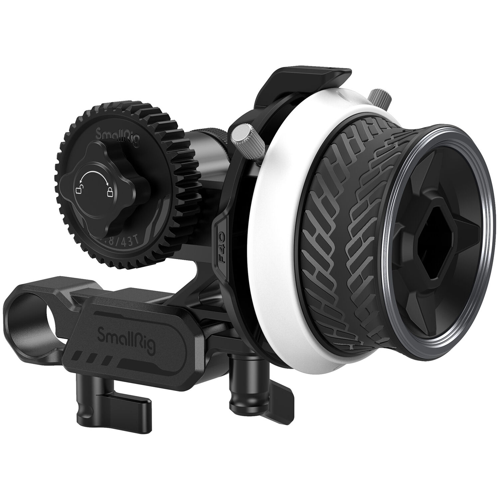
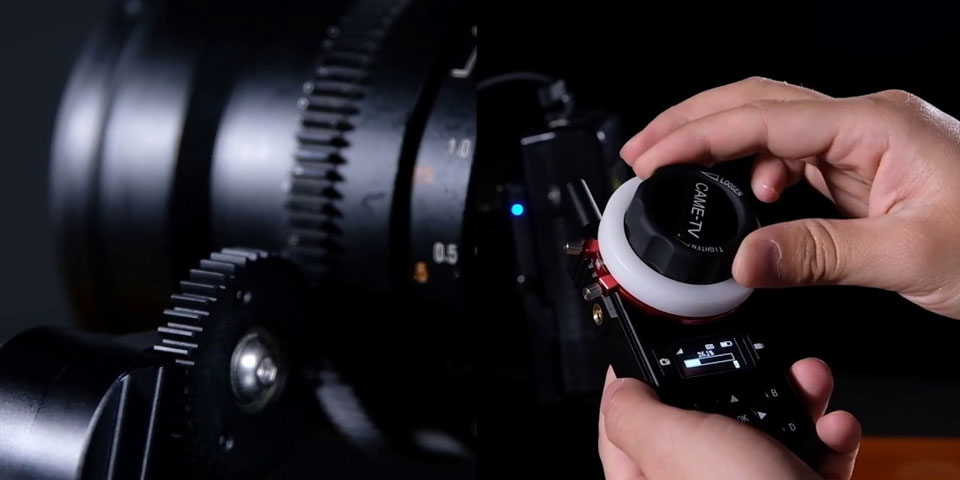

What is Follow Focus?
Follow focus is a geared mechanism used to change the focus on camera lenses used for filmmaking
called cinema lenses. They are typically used with high end video cameras called cinema cameras.
It can either be a mechanical device or now more often an electronic device which is wireless.


Problem
Unlike most modern consumer cameras, many cinema cameras do not have autofocus capabilities.
On a large crew, this is not an issue because they have an individual called the 1st Assistant Camera
(1st AC), whose only task is to keep the subject in focus. However on small sets, the crew does not
always have this luxury and sometimes must rely on the cinematographer to be the camera operator
as well as the 1st AC simultaneously. Having to do both jobs at once can become challenging especially
when following actors and trying to keep them in focus. Another issue is when a single person
wants to film themselves moving around the frame without anyone behind the camera to
change the focus point of the lens. Though there is an existing product that solves these issues,
it requires the user to purchase other compatible gear for it to function.
Existing Technology
The existing product is the DJI LiDAR Range Finder which costs $659.00 and requires
the DJI RS3 Pro gimbal ($869.00 - $1,298.95). The price is a huge factor which could
drive people away from buying the product. This Range Finder uses LiDAR to measure distance,
which means the subject has to be in the center of the camera. In addition, this system only
focuses on the object closest to the range finder which limits its applications.
Concept
Though the LiDAR system that DJI implemented to track the distance of the subject works well,
another option would be to use ultra-wideband (UWB) technology which is used in products like
the Apple AirTag. There are multiple benefits to using a UWB system instead of a LiDAR system
for determining distance of a subject. Compared to LiDAR, UWB is more affordable, has a longer
detection range, and can reestablish connection after the subject has been lost momentarily.
The rest of the auto follow focus system would be similar to other motorized follow focus modules.
However, instead of receiving a manual human input, the input would be based on the distance
information provided by the UWB system. This part of the system would include a NEMA 17 step motor
and the L298N motor driver which would be connected to the ESP32 microprocessor from the Makerfabs
UWB Pro. For the initial concept, each device will be connected with wires on a breadboard, but
later might be soldered together and placed inside a 3D printed enclosure.